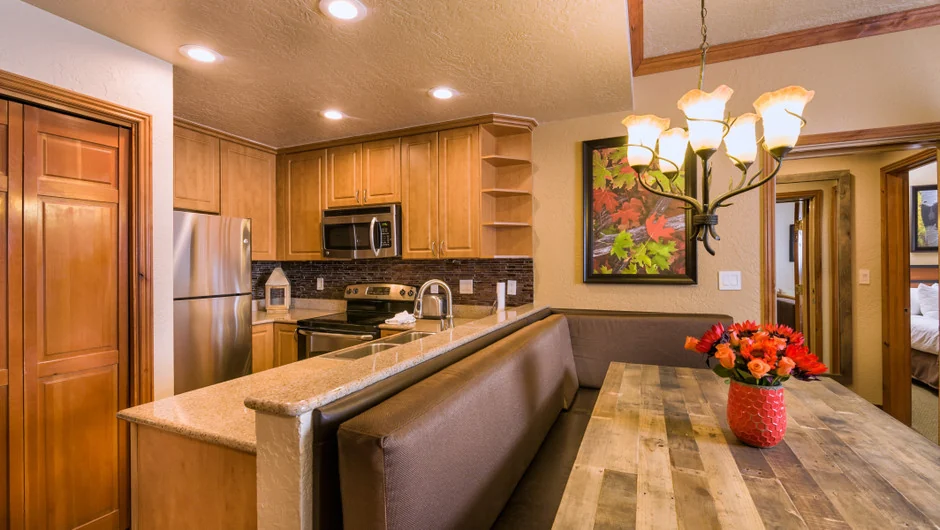
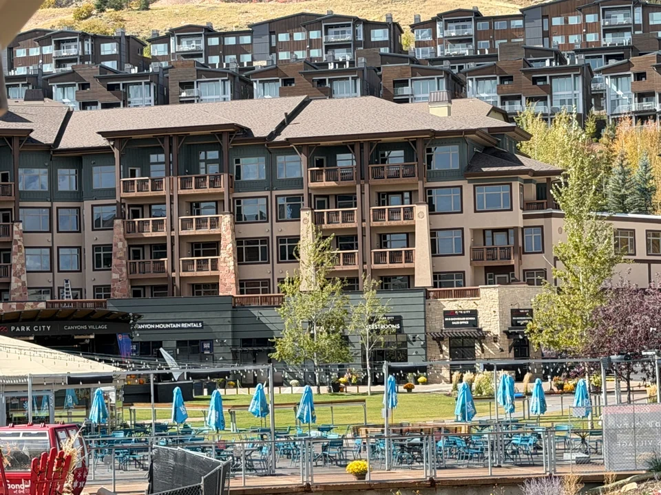

Booking the lodging is the easy part. Park City group villa logistics for a party of 24 come down to a handful of jobs that are trivial in November and impossible in February, and one of them is not the one groups expect.

One enquiry, three villas, one person to ask
A group of 24 across three units has a structural problem before a logistical one: who owns the booking as a whole. Assembled through separate agencies, three units means three reservations, three sets of terms, and nobody who sees all of it at once.
Our three Premier Two-Bedroom Villas share an owner, so one enquiry covers all three on the same dates and terms. That matters most when the group changes size, as it will. Our guide to renting all three for up to 24 guests covers how the beds and bathrooms divide; this one is about what happens after the dates are agreed.
What a group of 24 should lock in, and in what order
The ordering matters because these items do not compete for the same scarcity. Lodging and transport are capacity-limited and go first. Dining is calendar-limited. The rest is admin.
| When | Job |
|---|---|
| First | Confirm the villas, and get the all-in total for all three in writing |
| Next | Airport vehicles, quoted by ski bags rather than by seats |
| Early | Equipment rentals and lift tickets as one block of 24 |
| Early | Ski school places, which cap long before the lifts do |
| Weeks out | Any group dinner, booked against the restaurant's release date |
| Week before | The grocery order or the named shopping stop |
| Day before | Who holds keys for late arrivals, agreed in writing |
On the first line: ask for one number covering all three units including every fee and tax, rather than a nightly rate. The resort fee and the village assessment are charged per unit, so a group of 24 pays them three times. Our guide to resort fees and the costs that appear at checkout has the question to ask.
Seats are not the same as ski bags
This catches out almost every group, and it hides in the operators' own small print. Transfer companies advertise vehicles by passenger count — a van for six, a larger one for ten, a Sprinter for twelve. Read one line further and the same vehicles read very differently once equipment is involved: SUVs listed for five people with ski bags or more without, a twelve-seat Sprinter qualified as suitable for limited luggage, and at least one operator capping a vehicle at three hard ski cases however many seats it has.
So the arithmetic is not 24 divided by seats. It is 24 people plus however many ski bags, boot bags and suitcases they are actually carrying. Quote both numbers when you ask for a price, and ask specifically how many ski bags the vehicle takes.

Book early, too. Transfer capacity out of Salt Lake City is reported to fill through December to March, and a group needing several vehicles on one arrival slot competes for the same fleet. Our airport transfer guide compares the options; the per-person maths improves sharply at group size.
The villas this guide is written from
We own three Premier Two-Bedroom Villas inside Westgate Park City Resort, in Canyons Village. Each is 1,100 square feet — two king bedrooms, two queen sleeper sofas, sleeping eight — with a full kitchen, a kitchenette in the lock-off studio and two bathrooms with walk-in showers. Together they hold up to 24 guests, a short walk from the Red Pine Gondola.
Our open weeks for 2027 are Presidents' Week, 13 to 20 February, and spring break, 21 to 28 March. One enquiry covers all three, and one person answers it.
Arrival day and check-out morning
Twenty-four people will not land together, so build the day around the two fixed times rather than the flights. Listings for the resort consistently show check-in from 4pm and check-out at 10am, with late check-out subject to a fee and availability, and whoever checks in needing to be 21 or over. Confirm both with the resort, then decide who arrives first, who registers each unit, and where the keys sit for the late flight.
Check-out is the half groups never plan. A 10am check-out and an evening flight leaves 24 people with a gap, luggage and ski bags, and no rooms. Ask about luggage storage and the last-day shuttle before you need them. If parking matters, confirm the current arrangement rather than assuming: listings disagree on whether it costs anything.
One grocery run for 24, and Utah's drink rules
Three kitchens for 24 people means one shop, not three. The road in from the airport passes full-size supermarkets before the resort; the nearest useful cluster is at Kimball Junction, a few miles short of Canyons Village, where there is a Smith's. Make the stop a named job with one person responsible, and split the load across the three units on arrival. Our grocery guide covers what to actually buy.
The part that surprises visitors: Utah supermarkets sell beer up to 5 per cent alcohol by volume and nothing stronger. Wine and spirits come only from state liquor stores, which close on Sundays and on state and federal holidays. Lay that against your dates. Presidents' Day 2027 falls on Monday 15 February, inside Presidents' Week, so a group arriving that Saturday should expect the Sunday and Monday both shut, and buy on the way in.
Where 24 people actually eat together
A party of 24 sits in an awkward gap, and recognising that is most of the solution. Normal online reservations usually cap around a dozen — The Farm in Canyons Village takes parties of up to 12 and routes anything bigger through a separate process, releasing tables in batches. Private-event and buyout offers typically start at 25. Twenty-four falls between the two.
The answer is the middle tier nobody advertises prominently: restaurants with group menus that start at around 20 guests. In town, 350 Main runs group menus from 20 and has rooms seating up to 70 with a buyout available, and Chimayo has two private rooms in the sixty-to-eighty-five range. Visit Park City also keeps a group dining directory of venues taking 25 or more.
Plan one or two organised dinners and cook the rest; that is the pattern that works across a week. Our Canyons Village dining guide covers the everyday options, and if the group is really two families rather than four, our guide to splitting a single villa between two households is the better starting point.
Park City group logistics: common questions
How do you book three villas in Park City for one group?
In one conversation, if the villas share an owner. Ours do, so a single enquiry covers all three for the same week on the same terms. Booking three units through separate agencies instead means three reservations and three cancellation policies that may not match.
How many vehicles does a group of 24 need from Salt Lake City airport?
More than the seat count suggests. Operators advertise vans by passengers, but their own small print puts far fewer ski bags in the same vehicle, and one caps hard cases at three. Quote the number of ski bags and boot bags as well as the number of people.
What time can a group check in and check out at Westgate Park City?
Listings consistently show check-in from 4pm and check-out at 10am, with late check-out subject to a fee and availability, and whoever checks in needing to be 21 or over. Confirm both times with the resort, because a 10am check-out and an evening flight is a gap a group has to plan for.
Where can a group of 24 eat together in Park City?
Look for restaurants whose group menus start at around 20 guests rather than venues advertising private events from 25. A party of 24 sits in the gap between a normal online booking, which usually caps near 12, and a private buyout, so it needs the middle tier.
Can you buy wine and spirits at a Park City supermarket?
No. Utah supermarkets sell beer up to 5 per cent alcohol by volume, and wine and spirits are sold only through state liquor stores. Those close on Sundays and on state and federal holidays, which is worth checking against your own arrival date.
What is the one job a group of 24 should not leave late?
Airport transport. Peak-season vehicles out of Salt Lake City fill through December to March, and a group of 24 with ski bags needs several of them on one arrival window. Equipment rentals and any group dinner come next.